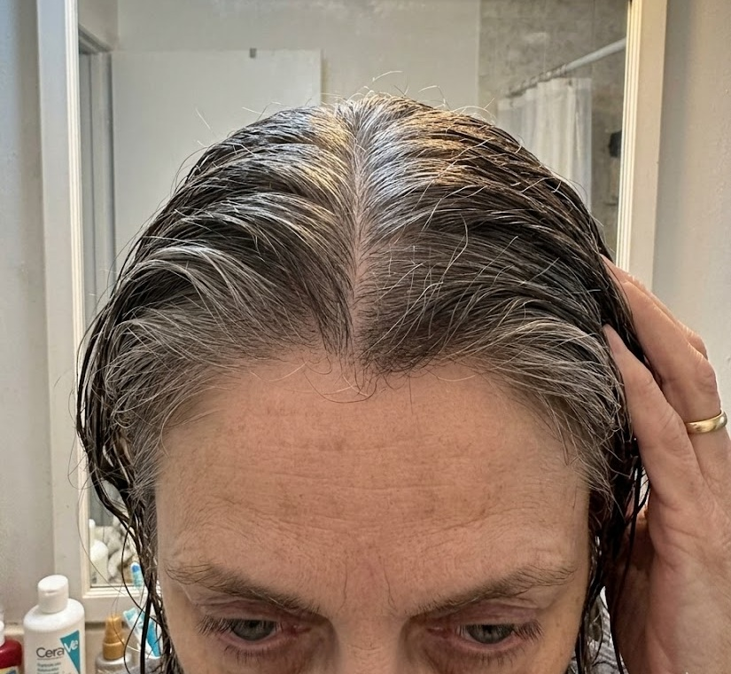
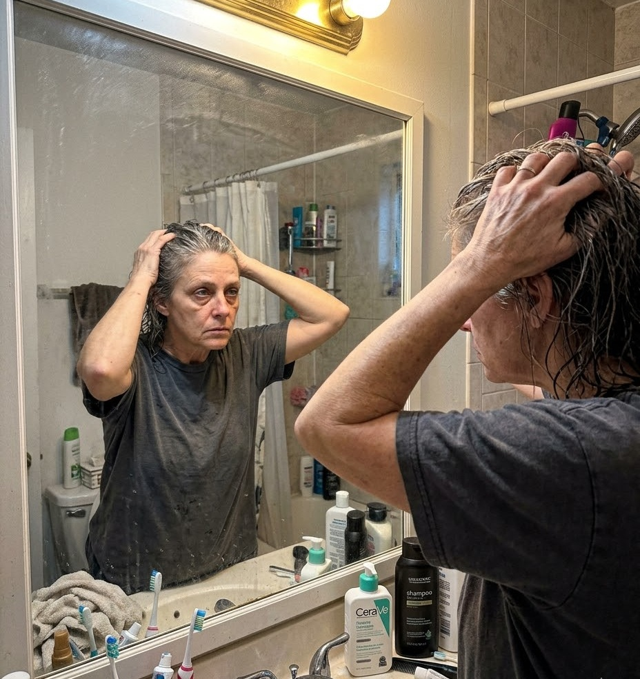
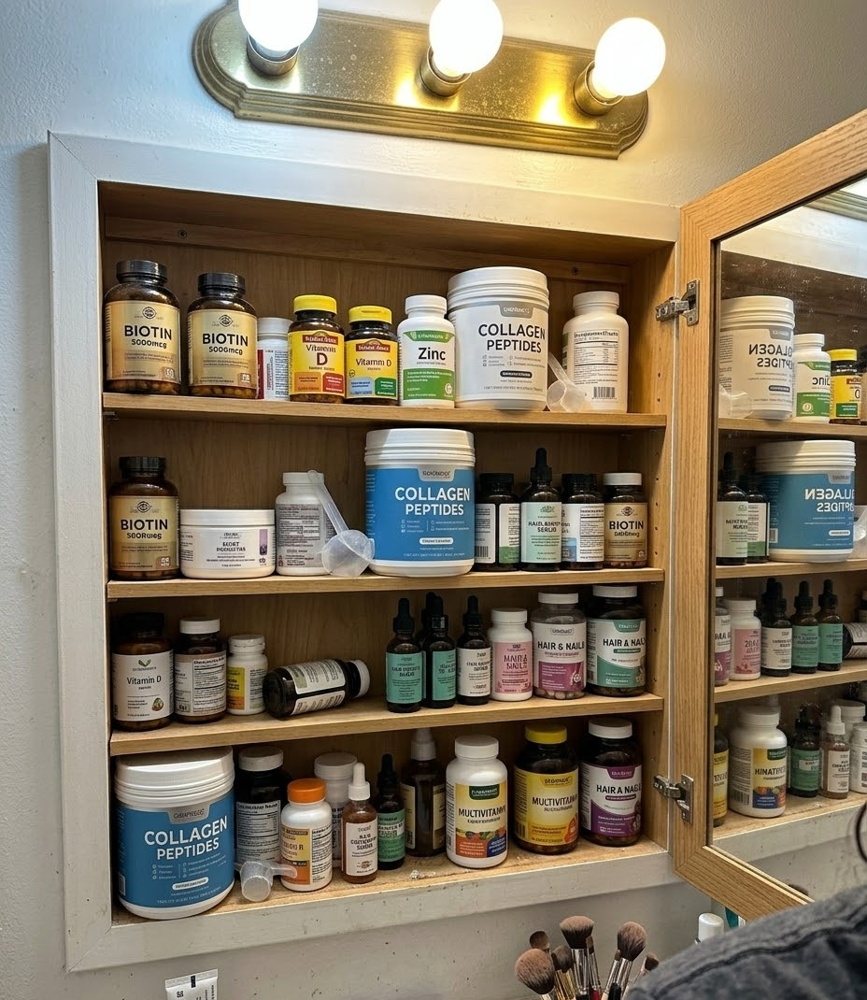
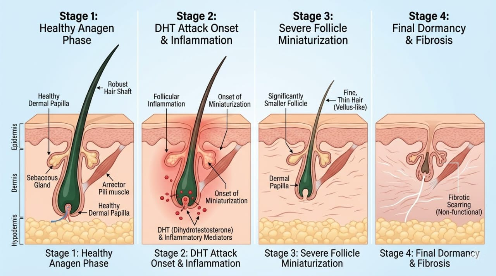
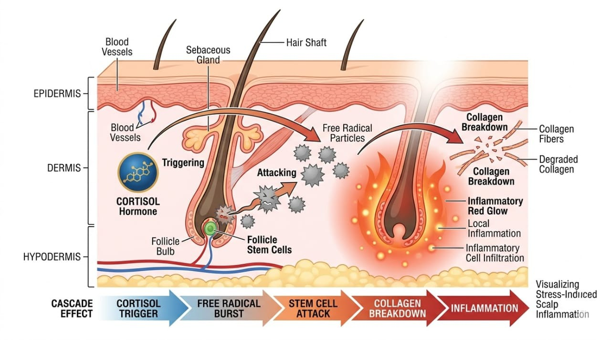
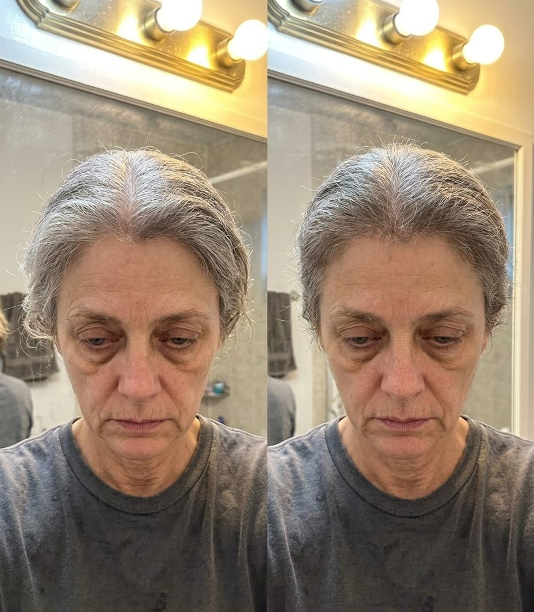
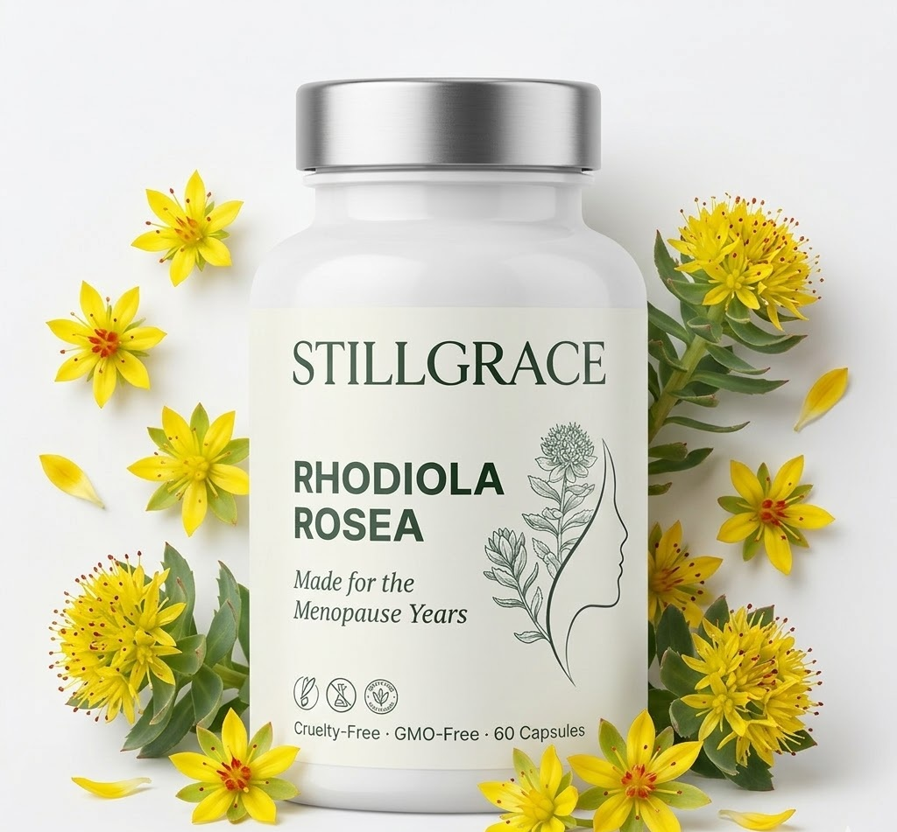
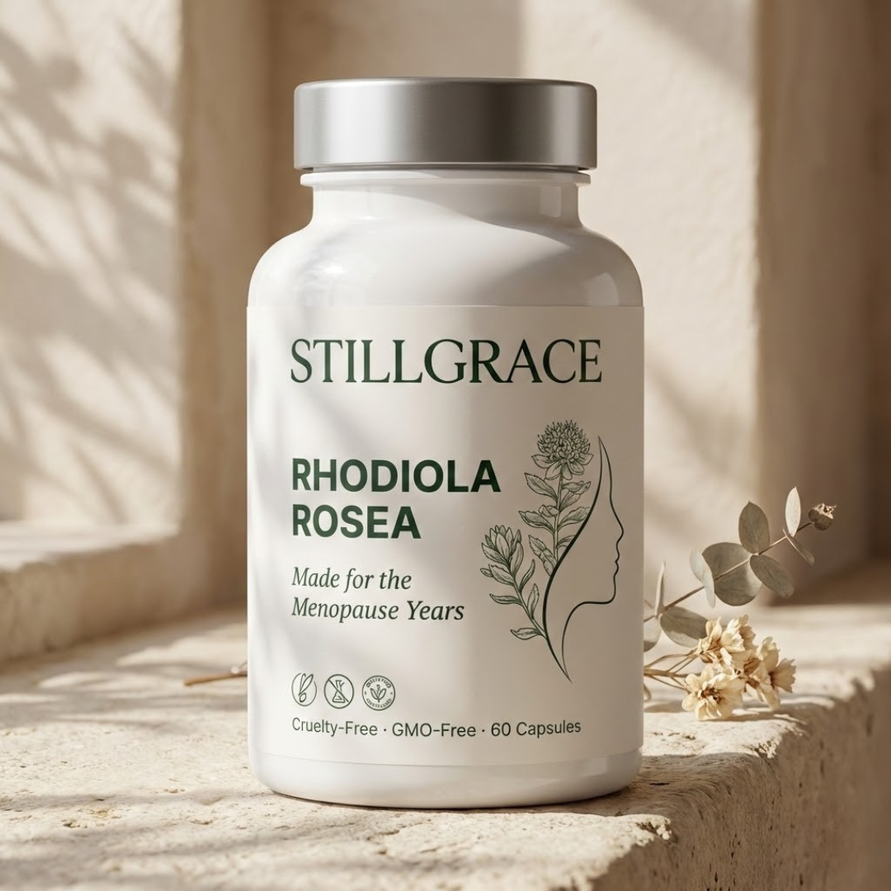

The $8 Billion Hair Growth Industry Won't Tell You This: DHT Is Just a Symptom—And While You're Blocking It, Oxidative Stress Is Destroying Your Follicles From Within
They're selling you sprays and pills that block DHT on the surface while the REAL problem destroys your follicles from the inside.

I'm about to expose why every DHT-blocking spray, pill, shampoo, and treatment you've tried has FAILED to get your hair fully back.
Not because they don't work. (Though if you're reading this, we both know they didn't.)
But because they're designed to treat a symptom while the root cause keeps destroying your follicles.
And the companies selling them? They know EXACTLY what they're doing.
If you've tried hair growth pills and they "worked for a few weeks then stopped"...
If you've used topical sprays or shampoos and got "some results but plateaued"...
If you're still losing handfuls of hair in the shower despite spending hundreds every month...
It's not your fault.
You were sold a surface-level fix while the REAL problem was never addressed.
And every month you spend blocking DHT on the outside is another month the ACTUAL root cause is:
- ✅ Damaging the stem cells that create new hair
- ✅ Destroying the collagen your follicles need to stay strong
- ✅ Shortening your hair's growth phase from 5 years to 18 months
- ✅ Creating internal inflammation that makes you MORE sensitive to DHT
The $8 Billion Hair Growth Industry isn't lying to you about DHT.
They're just not telling you the whole truth.
And the part they're hiding? It's the difference between "some improvement for a few weeks" and "actually getting your hair back."
My name is Brenda Walsh. I'm not a doctor or dermatologist.
I'm a 54-year-old woman who spent $6,347 over 18 months on DHT-focused treatments that gave me hope for 6 weeks... then left me right back where I started.
Clumps in my shower drain. Part widening every month. Avoiding family photos.
Until I discovered what the $8 billion hair growth industry won't tell you.
THE MORNING I ALMOST GAVE UP

It was a Tuesday morning in April.
I was standing in front of my bathroom mirror, wet hair pulled back, overhead light glaring down.
I could see straight through my part to my scalp.
After 18 months of trying everything the "hair experts" recommended.
After spending over $6,000 on sprays, pills, and treatments.
After doing EVERYTHING they told me to do.
I still looked like someone going through chemotherapy.
My husband walked in. Saw me staring at my reflection. Saw the tears.
"Babe, your hair looks so much better than it did last year—"
"I don't want 'better than last year.' I want MY hair. The hair I had back in my 40s. The hair I recognize as MINE."
He didn't know what to say. Neither did I.
I'd been so hopeful when I started trying everything at once. The pills. The sprays after every shower. The DHT-blocking shampoo. Following every instruction to the letter.
And it DID work. At first.
Week 1-2: "Oh my god, is this actually working? The shedding slowed down!"
Week 3-4: "Wait... there's still hair in my drain. Not as much, but it's still there."
Week 6: "The baby hairs appeared... but they're not growing longer. They're just sitting there."
Month 3: "I'm STILL losing hair. Every shower. Every brush. It never stops."
Month 6: "This is bullshit. I've spent $528 and my part STILL shows through under lights."
Month 9: "Was this all placebo? Did it even work at all? Because I'm right back where I started."

I didn't get my hair back.
I got a TEMPORARY slowdown that fooled me into thinking it was working.
And then—something I didn't understand yet—kept destroying my follicles while I was busy blocking a symptom.
That's when I made a promise to myself:
"I'm going to figure out what they're NOT telling me. Even if it takes six months. Even if I have to read every medical journal on menopause and hair loss. I'm going to find the missing piece."
I had no idea what I was about to discover.
THE QUESTION NOBODY WAS ASKING
I started where everyone starts: Google.
"Why is my hair falling out after menopause"
"Hair loss won't stop no matter what I try"
"Why don't hair growth pills work long-term"
"DHT blockers stopped working"
"Menopause hair loss keeps getting worse"
And I found... nothing.
Just more articles telling me to "give it time."
More recommendations for the SAME treatments I was already using.
More suggestions to "add Rogaine" or "try PRP injections."
Nobody was asking the question I was asking:
"If DHT is THE problem... why don't DHT blockers give me permanent results?"
So I went deeper.
Medical journals. PubMed. Research studies on menopausal hair loss.
I spent 4-6 hours every night for three months reading studies I barely understood.
Taking notes. Highlighting. Connecting dots.
And then I found it.
A study from the Journal of Clinical Endocrinology titled:
"Oxidative Stress and Androgenetic Alopecia: The Missing Link in Menopausal Hair Loss"
I almost scrolled past it. The title was dense and scientific.
But something made me click.
And what I read made my stomach drop.
Here's what the study said (translated from medical jargon):
"DHT-induced follicle miniaturization is significantly AMPLIFIED by oxidative stress. Women experiencing menopausal hair loss show elevated markers of oxidative damage—specifically free radical accumulation in follicle stem cells—that DHT blockers alone cannot address."
I read it three times.
Then I read the entire 47-page study.
Then I found six more studies saying the same thing.
Here's what I finally understood:
DHT isn't the cause. It's the SYMPTOM.
Oxidative stress is what's creating the DHT in the first place.
Let me explain what that means.
WHY DHT BLOCKERS STOP WORKING AFTER 6 WEEKS

Okay, stay with me here because this is where it all clicks.
Everyone agrees on this part:
When you hit menopause, estrogen drops by 40%.
Estrogen is what keeps your hair in the growth phase.
Without it, your hair enters the shedding phase earlier.
Everyone ALSO agrees on this:
When estrogen drops, your body becomes more sensitive to DHT (dihydrotestosterone).
DHT wraps around your follicles like a fist squeezing a garden hose.
Less blood flow means less nutrients reaching your follicles. Your follicles shrink. Your hair gets thinner and weaker.
This is where the hair growth pills and sprays come in.
They give you ingredients that block DHT:
- * Saw palmetto
- * Pumpkin seed extract
- * Biotin
- * Marine collagen
- * And those mysterious "proprietary blends" where you don't even know what you're taking
And it WORKS. For a few weeks.
You get temporary improvement.
The shedding slows. Baby hairs appear. You feel hope.
But here's the part nobody tells you:
There's a SECOND cascade happening that DHT blockers can't touch.
And this cascade is what makes the results temporary.
THE OXIDATIVE STRESS CASCADE (What They're Hiding)

When estrogen drops during menopause, something else happens that the hair growth industry NEVER talks about:
Your cortisol (stress hormone) SPIKES.
Why? Because estrogen helps regulate cortisol. Without estrogen, cortisol skyrockets.
High cortisol does something terrifying:
It creates FREE RADICALS in your body.
Free radicals are unstable molecules that attack your cells—including your hair follicle stem cells.
This is called OXIDATIVE STRESS.
And here's what oxidative stress does to your follicles while you're busy blocking DHT:
- ✅ Damages stem cells in your follicles (the cells that create new hair)
- ✅ Destroys collagen in your scalp (the structural support your follicles need)
- ✅ Shortens the growth phase (your hair grows for 18 months instead of 5-7 years)
- ✅ Creates inflammation (which makes your follicles even MORE sensitive to DHT)
Now here's the critical part:
Oxidative stress and DHT work TOGETHER to destroy your follicles.
It's not one or the other.
It's BOTH.
Think of it like this:
- * DHT is the squeeze on the garden hose (restricts blood flow)
- * Oxidative stress is the RUST eating through the hose from the inside (damages the structure)
You can stop the squeeze temporarily (DHT blockers).
But if the hose is still rusting from the inside (oxidative stress), water flow never fully recovers.
That's why the pills work for 6 weeks then stop.
That's why the shedding slows but never fully stops.
That's why you're "better for a moment" then right back where you started.
THE STUDY THAT PROVED IT
I found a study from Seoul National University published in 2023.
They took 200 menopausal women with hair loss and divided them into three groups:
GROUP 1: DHT blockers only (pills, sprays, and topical treatments)
GROUP 2: Antioxidants only (to reduce oxidative stress)
GROUP 3: DHT blockers + Antioxidants (addressing BOTH)
Results after 16 weeks:
- * Group 1 (DHT blockers only): 38% improvement in hair density
- * Group 2 (Antioxidants only): 62% improvement in hair density
- * Group 3 (Both): 73% improvement in hair density
Notice something?
The antioxidant group got 62% results WITHOUT any DHT blockers.
The DHT blocker group only got 38%.
When you combine them, you get 73%. But look at where the heavy lifting is happening:
Antioxidants alone: 62%
DHT blockers alone: 38%
The antioxidants are doing almost TWICE the work.
I sat there staring at that study for twenty minutes.
This was it.
This was the missing piece.
DHT blockers work temporarily. But oxidative stress is what's creating the DHT sensitivity in the first place.
If you don't stop the oxidative stress, the results will always be temporary.
You're trying to bail water out of a sinking boat instead of patching the hole.
WHY THE INDUSTRY WON'T TELL YOU THIS
Here's where it gets ugly.
If they admitted that oxidative stress is the ROOT CAUSE...
If they told you that DHT is just your body's RESPONSE to oxidative damage...
Their entire business model collapses.
Think about it:
Oxidative stress is fixed with adaptogens.
Adaptogens are plants. Ancient herbs. Rhodiola. Ashwagandha. Holy basil.
You can't patent a plant.
You can't monopolize an adaptogen.
You can't create a $88/month subscription dependency on something that ACTUALLY fixes the root cause.
But DHT blockers? Those you CAN sell forever.
Because if you only block the symptom (DHT) and ignore the cause (oxidative stress), the problem NEVER fully goes away.
You get:
- ✅ Temporary improvement (hope)
- ✅ Partial results (keeps you buying)
- ✅ Lifetime dependency (recurring revenue)
It's not a conspiracy. It's a business model.
And it's why the $8 billion hair growth industry will NEVER tell you about oxidative stress.
They can't afford to.
WHAT YOU ACTUALLY NEED (And Why You Can't Get It From Salad)
So if oxidative stress is the root cause...
What you actually need are ANTIOXIDANTS.
Powerful antioxidants that can neutralize those free radicals attacking your follicles from the inside.
Now, you might be wondering—aren't antioxidants what they're always telling you to eat more of? The blueberries, the spinach, all those "superfoods for healthy aging"?
Yes. Those foods have antioxidants.
You CAN eat more of them if you want.
But here's the truth...
Your hair isn't falling out because you're not eating enough salad.
It's falling out because menopause created an INTERNAL hormonal breakdown.
High cortisol. Free radicals attacking stem cells. Collagen destruction happening at the cellular level.
And you can't fix an internal hormonal problem with external treatments.
Not with DHT sprays on your scalp.
Not with biotin pills that get destroyed in your stomach acid before reaching your follicles.
Not with blueberries in your morning smoothie.
You need antioxidants that work at the HORMONAL level.
Adaptogens that regulate your stress response from the inside.
Something that actually addresses cortisol—the trigger creating all this oxidative damage.
That's when I went back to the research.
Remember Rhodiola? That plant I mentioned earlier on the adaptogens list?
I started digging into what made it different from the others.
One thing kept standing out in every study on oxidative stress and cortisol:
Rhodiola Rosea worked better than anything else.
The ancient golden root that survives the harshest climates on Earth.
WHAT ACTUALLY FIXES THIS
Rhodiola Rosea.
A golden root that grows in the harshest climates on Earth—Siberian mountains, Arctic tundra, high-altitude regions where nothing else survives.
For over a thousand years, women living under EXTREME stress—losing their hair, barely surviving harsh conditions—used Rhodiola to survive.
Just like menopause is wrecking your hair today, those brutal climates were wrecking theirs.
And this root saved them.
Here's why modern science finally discovered what those ancient women already knew:
Rhodiola is packed with some of the most powerful antioxidants found in nature.
And it regulates your body's stress response at the hormonal level.
See, this ancient root does exactly what your hair needs after menopause:
It lowers cortisol—so your hair stops shedding from stress.
It preserves collagen—so your follicles have the structural support they need.
It neutralizes free radicals attacking your hair from the inside.
And it extends your growth phase—so hair grows longer before it sheds.
It works from INSIDE your body—where the hormonal breakdown is actually happening.
Not on the surface. Not temporarily.
At the root cause.
MY PERSONAL TEST

But here's where it got hard.
I tried ordering Rhodiola online. Amazon. Health stores. Supplement sites.
Every single one was either:
- * Cut with fillers and rice powder
- * Mixed with other herbs in "proprietary blends" where you don't know the dose
- * Or so weak it wouldn't do anything (50mg capsules when studies use 400-500mg)
I spent two months trying to find clinical-grade Rhodiola—the kind actually used in studies.
Finally, I found a small family farm in Siberia that's been cultivating Rhodiola for three generations.
They grow it at 10,000 feet in the Altai Mountains—the same harsh conditions where it's been used for over 1,000 years.
They agreed to ship me pure, full-spectrum extract. No fillers. No blends. Just the root.
That's what I tested on myself.
I became my own guinea pig.
Every morning, I took 500mg on an empty stomach.
No sprays. No pills. No DHT blockers.
Just Rhodiola. Addressing oxidative stress at the source.
Here's what happened:
Week 1: I counted the hairs in my shower drain. Went from 80-100 hairs to about 40. I thought I was imagining it. Counted again the next day. Still 40.
Week 3: Tiny baby hairs along my part line. Little wisps standing straight up. I took photos because I couldn't believe it.
Week 6: My hairdresser asked what I was doing differently. "Your hair feels thicker," she said. "And you have all this new growth at your hairline."
Week 8: My part was visibly tighter. I could wear my hair down without seeing straight through to my scalp.
Week 12: I had the hair thickness I remembered from my early 40s. Not teenage hair. Just... normal. Healthy. MINE.
And it didn't stop working after 6 weeks.
Because I wasn't just blocking a symptom.
I was fixing the root cause.
REAL WOMEN, REAL TRANSFORMATIONS
I quietly started sharing what I discovered with women in my menopause support group.
Women who'd spent thousands on DHT blockers and were still losing hair.
Women who were considering wigs.
Women who'd been told "just accept it, it's aging."
I started importing small batches from that Siberian farm.
Just enough for 10-15 women to test over 12 weeks.
I gave them the exact formula I was taking. Same source. Same potency. Same dose.
Here's what happened:
Patricia, 58 years old. Had spent $8,000 on DHT-blocking treatments over three years. Pills, sprays, PRP injections.
After 8 weeks: "I'm seeing thickness I haven't had since my early 40s. My husband keeps complimenting my hair. This did more than $8,000 worth of treatments that only worked temporarily."
Margaret, 61. Was taking four hair growth pills a day at $88/month for over a year.
After 10 weeks: "Four pills a day for a year gave me temporary results that plateaued. Rhodiola gave me LASTING results. I cancelled my subscription. Best decision I ever made."
Linda, 54. Was literally pricing wigs on Amazon after everything else failed.
After 6 weeks: "People are asking if I've had extensions. I just smile and say 'nope, it's all mine.' I can't believe the solution was this simple."
Sarah, 55. Spent $12,000 on two hair transplant procedures that "didn't take."
After 12 weeks: "I can see baby hairs filling in where the transplants failed. For 1/100th the cost and none of the pain. I'm furious nobody told me about this before I wasted $12,000."
INTRODUCING STILL GRACE

After seeing these results, I knew this had to reach more women.
So I partnered with a small, family-owned laboratory in the United States that agreed to produce clinical-grade Rhodiola with zero compromises.
No dilution. No cheap substitutes. No proprietary blends where you don't know what you're getting.
Complete transparency. Clinical doses. Real results.
We called it Still Grace.
And it's the ONLY Rhodiola supplement specifically formulated for menopausal hair loss that addresses the ROOT CAUSE the hair growth industry ignores.
What's Inside Every Bottle:
- ✅ Clinical-Grade Rhodiola Rosea Extract - Standardized the exact potency used in clinical studies
- ✅ 500mg Per Serving - The therapeutic dose proven to lower cortisol and reduce oxidative stress
- ✅ Third-Party Tested - Every batch tested for purity and potency
- ✅ Sourced from Siberian Mountains - The original golden root used for over 1,000 years
- ✅ No Synthetic Hormones - Just the adaptogen your body needs to break the oxidative stress cycle
How It Works:
When you take Still Grace every morning, here's what happens inside your body:
Your cortisol levels drop naturally (so your hair stops shedding from stress)
Free radical production slows down (oxidative damage to your follicles stops)
Collagen production resumes (your follicles rebuild their structural support)
Follicles that were "sleeping" wake up and return to normal growth cycle
This is why Still Grace works when DHT blockers plateau.
THE 90-DAY "THICKER HAIR" GUARANTEE
Look, I get it.
You've been burned before.
Spent money on treatments that "worked for a few weeks" then stopped.
Pills that promised results in "just 90 days" and did nothing long-term.
Sprays that looked great in reviews and plateaued after a month.
I'm not asking you to trust me.
I'm asking you to TEST me.
Here's my promise:
Use Still Grace for 90 days.
Take 500mg every morning. That's all.
Count the hairs in your shower drain. (They'll decrease.)
Take weekly photos of your part. (It'll tighten.)
Feel for baby hairs along your hairline. (They'll appear.)
Track how often you're touching your hair nervously. (You'll stop.)
And if you don't wake up one morning thinking:
- "Wait... I forgot to obsess about my hair today."
- "My part doesn't show through under these lights anymore."
- "I can actually wear my hair in a ponytail again."
- "My hairdresser asked what I'm doing differently."
I'll refund every single penny.
No forms to fill out.
No "store credit" nonsense.
No 20-minute phone call with a "retention specialist."
Just email support@still-grace.com and say "It didn't work."
Your refund hits your account within 48 hours.
Why am I so confident?
Because when you address the ROOT CAUSE, results aren't a mystery.
They're inevitable.
THE TWO PATHS
Right now, you're standing at a crossroads.
Two paths stretch out in front of you.
Only one leads to permanent hair restoration.
- Keep taking DHT-blocking pills that work for 6 weeks then plateau.
- Keep spending $88-200/month on treatments that create temporary improvement, not lasting results.
- Keep counting hairs in your brush every morning.
- Keep avoiding mirrors in bright lighting.
- Keep wearing your hair in that same pulled-back style that hides your part.
- Keep being a recurring revenue stream for companies that NEED oxidative stress to keep destroying your follicles so you keep buying.
- Keep skipping family photos because you "don't look like yourself anymore."
- Keep watching your husband's hand pass over your head without running through your hair.
- Keep waking up with that sinking feeling when you see more hair on your pillow.
- Keep pretending you're "fine with aging naturally" while dying inside every time you catch your reflection.
- Keep giving your money to an industry that treats symptoms, not causes.
- Spend less than you'd blow on one month of DHT-blocking pills.
- Get an adaptogen that addresses oxidative stress—the ROOT CAUSE they won't tell you about.
- Stop the free radical damage destroying your follicle stem cells.
- Lower cortisol naturally so your body stops creating the problem.
- Wake up in 2 weeks with noticeably less hair in your drain.
- Wake up in 4 weeks with baby hairs you can feel along your temples.
- Wake up in 8 weeks with your hairdresser asking what you're doing differently.
- Wake up in 12 weeks with your confidence back.
- Take a photo with your family without strategically positioning yourself to hide your part.
- Feel your husband run his fingers through your hair again.
- Stop obsessing over your hair and start living your life.
- Join the revolution against surface-level fixes that never last.
The choice is yours.
WHAT TO DO NEXT
But whatever you do, don't close this page thinking "I'll order later."
- Later = another month of oxidative stress destroying your follicles
- Later = another $150 spent on DHT blockers that plateau
- Later = another family gathering where you strategically hide in photos
Your follicles have been under oxidative attack long enough.
They're not dead. They're waiting.
Waiting for someone to stop the free radical damage.
Waiting for you to give them one more chance.
🔒 TRY STILL GRACE RISK-FREE - 90 DAY GUARANTEE⚡ Free shipping on all orders
💯 90-Day "Thicker Hair" Money-Back Guarantee
🔐 Secure checkout – your information is protected
To thicker, fuller hair you'll actually recognize as yours,
Brenda Walsh
Former Hair Loss Desperate
Creator of the Oxidative Stress Solution the Industry Won't Tell You About
P.S. – I just got a text from Patricia – the woman who spent $8,000 on DHT treatments. She's at her daughter's wedding. Wearing her hair DOWN. Actually in the photos. Smiling. That could be you in 12 weeks. But only if you address the root cause.
P.P.S. – Still Grace is formulated with clinical-grade Rhodiola and third-party tested. This is the adaptogen the $8 billion hair growth industry doesn't want you to know about.
P.P.P.S. – Remember: 90-day money-back guarantee. If oxidative stress isn't the missing piece for you, just send it back. But I'm betting you'll be too busy running your fingers through your thick hair to even think about a refund.
⚡ UPDATE: March 10, 2026 — 11:23 AM EST
Demand has been overwhelming since this article went live this morning.
Current inventory: limited units remaining
Order now to lock in your discount + FREE SHIPPING before we sell out.
NOTE: Still Grace is NOT available on Amazon or eBay. If you see it listed there, it is a counterfeit product. Only order from this page to guarantee the authentic formula.



I was SO skeptical. I've been burned by so many of these "doctor backed" products. But my sister-in-law sent this to me three times and I finally caved. Just finished my second bottle and I genuinely cannot believe the difference. My part is thinner than it's been in 8 years. Eight years. I'm in shock.
Same!! I told myself I wasn't going to buy another hair product until the bottle was empty and the trash was already in the dumpster 😂 But I just ordered the 3-pack because I don't want to run out. The difference is real.
Can someone tell me if this works for women who've already been on minoxidil? I've been on it for 3 years and I'm terrified to stop but I'm also sick of the side effects. My scalp is constantly irritated.
I was on minoxidil for 4 years. Switched to Still Grace 5 months ago — did a slow transition over 3 weeks rather than stopping cold turkey. ZERO rebound shedding. And my scalp is completely calm for the first time since I started the prescription. Ask your doctor obviously but that was my experience.
I'm 71. Is there an age where this stops working? I've had thinning for almost 20 years and I assumed it was too late for me.
Ruth my aunt is 69 and she's been on it for 4 months. She says she can see new growth for the first time in years. Worth trying — the guarantee is 90 days so worst case you get your money back. Nothing to lose.
I spent $4,200 on three rounds of PRP last year. My dermatologist kept saying "give it time." I switched to Still Grace out of frustration and in 8 weeks I have more visible improvement than 12 months of injections. I'm honestly a little angry about all the money I spent.
My hairdresser STARTED the conversation. I walked in for my regular cut and before I even sat down she grabbed my shoulders and said "your hair — what happened? In a GOOD way." I hadn't said a word to her about Still Grace. I'd been going to her for 9 years and she absolutely noticed without me mentioning it.
Angela this just sold me. Ordering right now.
Does it ship to Canada? I can't see a Canadian option on the website.
Norma — yes it does! I'm in Ontario. Just ordered 3 bottles and they arrived in 8 days. Standard international shipping. Totally worth it.
I bought this for my mom who is 66 and has been devastated by hair thinning for years. She called me in tears at week 7 — happy tears. Said she hadn't seen her hairline like this since she was in her 40s. Best money I've ever spent on another person.
I'm halfway through my first bottle and already noticing less in the drain. I was losing SO much hair every wash day that I was genuinely scared. It's not perfect yet but the change in shed is real and I'm only 6 weeks in. Will update at the end of the bottle.
Patricia come back and update us! Following this thread. We need all the real updates we can get 🙏
One more thing — the smell is amazing. It smells like something clean and botanical. My husband asked what I was using and he doesn't notice anything beauty-related ever. High praise from that man 😂